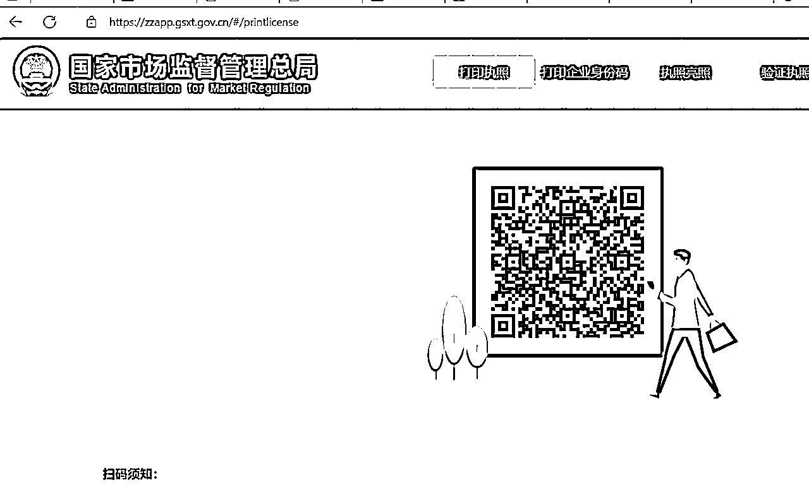

来源：https://nduu060ujk.feishu.cn/docx/C93kdHCfWoL6BqxrEnHcfk3dnyh
支付宝上有代理注册的营业执照，只要9.9还可以包邮，简直很划算，不需要自己去申请，就可以花很小的代价去获得
但是，有一个隐藏起来的坑，那就是注销需要2200+，其次每年代理税务需要900+，你不交钱去代理，那就容易遇到被坑，对方直接一个举报，那就会很麻烦
星球中，我没有找到在浙江办理营业执照的帖子，还是一个空白
刚好我这几天把整个流程都跑下来了，那就做一个帖子，希望也可以帮助我们圈友，全程0收费，全流程30分钟左右
注册营业执照，需要一个地址，我们没必要去租赁，只需要一个网店的地址就行，淘宝，pdd，微店都行，非常方便
这个部分，可以直接参照圈友@广深莞注册公司@山歌的文章，写的非常详细https://articles.zsxq.com/id_85oj2zwgwlpe.html
浙江的营业执照申请，在电脑端是完成不了了，因为没有电商的选择，必须要填写实体的租赁店面，但是在app浙里办上，可以完成
敲重点：下载app浙里办，这是杭州市的政府服务app，很方便，很多事情都可以在上面完成
下载app，完成注册之后，就可以开始了
APP是这个样子的
接下来的步骤，我放在视频里，跟着做就行
遇到app卡顿和故障的时候，不用担心，返回上一步就行
登记完成之后，就是等待半天左右，然后就会收到短信，提醒通过或者不通过，不通过那就去更改，遇到无法更改的部分，就重新申请，重新走流程会更快，其次客服电话是打不通的，我试过，哈哈哈哈哈哈哈哈哈哈
通过之后，下一步就是电子签名
也是在APP里面完成，路径：搜索框，个体户，选好区域，就会到这个页面
点击电子签章，就可以了
下一步就是等待通过，然后自动跳转到企业开办一件事，差不多也是半天左右，就通过了
这里会遇到一个坑，明明通过了，但是无法查看营业执照
搜索微信的小程序，【电子营业执照】来获取
下一步就是下载执照
最后一步是打印，完成之后，就可以获得pdf的营业执照，我也把网页贴一下
https://zzapp.gsxt.gov.cn/

跟着流程走到这里，你的营业执照也就到手啦，恭喜